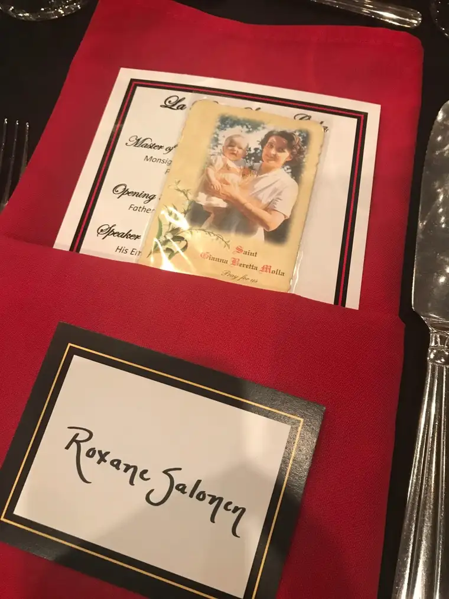
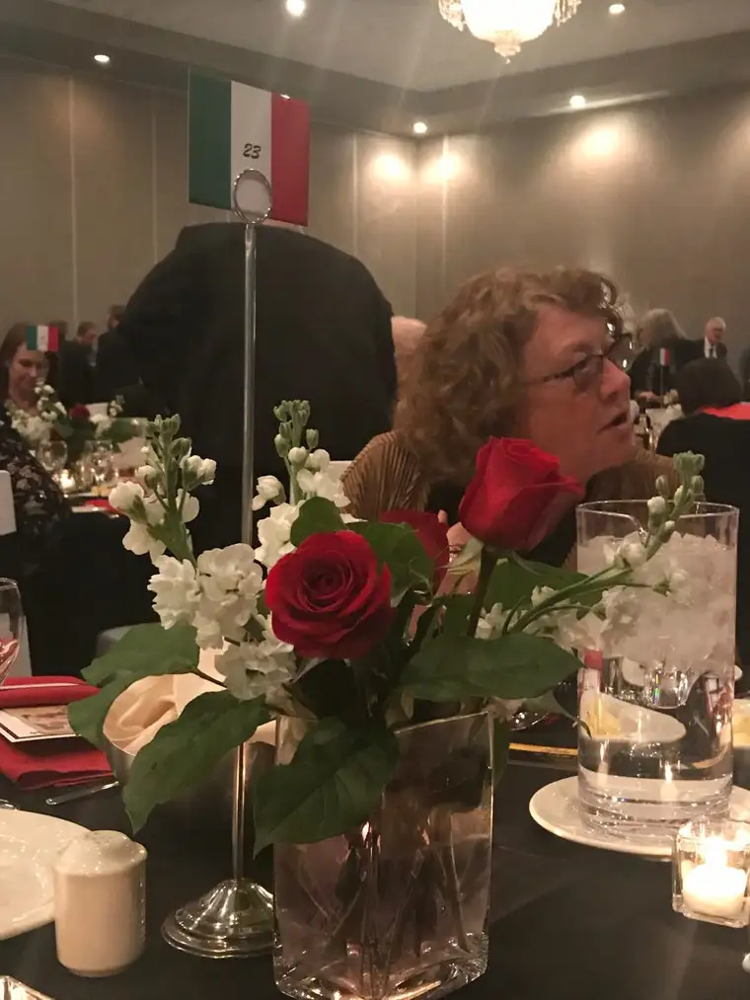
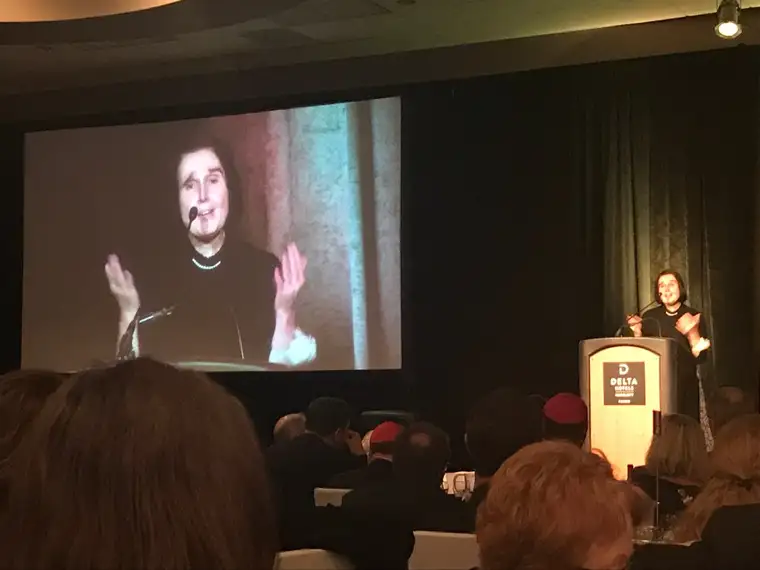
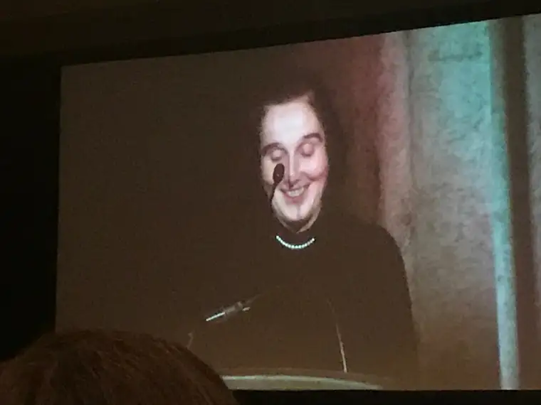
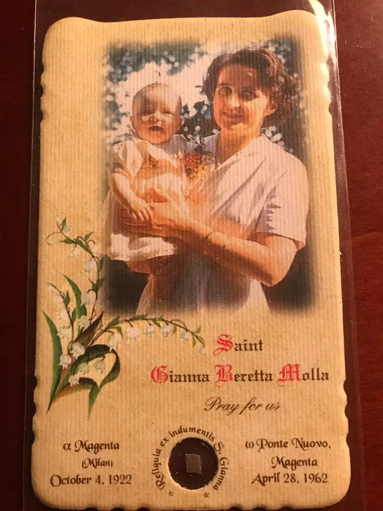

When Monsignor James Shea announced the special guest in our midst that beautiful April evening, just last month, here in Fargo, N.D., chills spread like a holy electric spark through my body.
“It’s my great pleasure now to introduce the daughter of a saint…a saint who has inspired me and countless others for many years; a saint who gave her life for her unborn child so that her daughter might live,” he began. “Our honored guest tonight is this daughter, and she has been most worthy of, as she calls them, her ‘saint mom and her holy dad.'”

Several years earlier, my middle son had had the privilege of meeting St. Gianna’s son, Pierluigi, and dining with him for breakfast, as I shared here. That seemed a once-in-a-lifetime honor for our whole family. I never could have imagined I’d be offered a similar opportunity someday to meet and dine with one of her children — the very one, in fact, for whom she died to save.
A few hours earlier, our group had gathered at my parish of Saints Anne & Joachim Church for Mass with Cardinal Raymond Burke presiding, and a choir from the University of North Dakota providing angelic music from the loft.


And now, the reason the cardinal had descended on our humble city was being announced at the Italian “LaBella Serata” gala that followed, hosted by St. Gianna’s Maternity Home in Warsaw, N.D.


I watched with gratitude as Dr. Gianna Emanuela Molla, St. Gianna Beretta Molla’s youngest daughter — whom she held for only days before the Lord called her to “Paradise,” as her daughter noted — took a spot cheerfully at a podium just feet from me. As she spoke in English flavored with strong hints of Italian, I felt as though I were glimpsing heaven itself.

“I would not be here with you this evening if I had not been loved so much,” Molla began. “Life is…the most important, the most precious, the most sacred gift we have…”

Just minutes before, some very exciting news had come to us all. In her quest to honor her mother and father, and promote her mother’s legacy, Molla had decided to direct all her aspirations toward establishing a center for pilgrims to pay homage to her parents’ lives of sacrifice and love. Until recently, it was planned in Italy as a restoration of a current site, but a new development had changed its course, and we were among the first public audience to hear of it.
“With many prayers and much deliberation, the children of Gianna, along with Cardinal Burke and others involved, have considered several options,” Shea reported. “I am humbled and thrilled to announce to you that the St. Gianna and Pietro Molla International Center for Family and Life will be established here in the United States of America.”
I have yet to hear where the center will be located, but here’s a link to initial plans, along with information on where to donate for those who might want to be part of this exciting project — something that, to me, seems a gift from St. Gianna herself.
Beyond this, let me share some insight I gleaned that beautiful evening. St. Gianna has been connected to the causes of mothers, infants and unborn children, but throughout the course of the evening, as Molla spoke of her parents, even reading part of the love letters they’d exchanged during their marriage, I couldn’t help but feel — and quite strongly — that St. Gianna is meant to be, also, a patron saint for marriage, along with her “holy husband” Pietro.
Molla read a few of them to us, including one her father had written after her mother’s death: “When you were alive I could see you where you were. Now that you are in heaven I can see you wherever I am.” He begged of God, and his wife, “to help me to carry my cross day after day…and grant that every day we may be nearer to you… (and that God would) find us worthy to come near you forever.”
Likewise, she read some of her mother’s words to her father: “Dearest Pietro, I am sure you will always make me as happy as I am now, and that the Lord will listen to your prayers coming from a heart that has always loved him and served him in a saintly way. Pietro, how much I have to learn from you. You are such a fine example for me and I thank you for it.”
In addition, her mother had once called Pietro “the most dearest and most affectionate little husband…the most precious one there is on earth.”
And yet, in all, their earthly marriage was very short; St. Gianna died just six years after their wedding, her daughter shared, and only a few days after her April 21st birthday on Holy Saturday, in 1962.
“Dad lived 48 years of his long life without Mom’s peaceful presence,” Molla shared, noting that her sister Maria died tragically shortly after her mother’s death at only 6 years old from a bacterial infection.
“I can testify, since I’ve lived almost 50 years of my life with my Dad, that my saint-mom listened to my dad’s prayers, and helped him to carry his cross day after day and realize God’s will,” Molla shared, noting that they wanted to be “one heart and one soul,” and were united spiritually in Communion, through death. “Love lasts not a day but forever.”
She continued, saying that during his long life — Pietro died at age 97 — her father told her many times, “Eternity would not be enough time to thank the Lord for all the graces he has granted me.” Molla added that her Mom testified to the sacrament of life, along with her Dad, “till their last breath.”
I’m not sure what is a more beautiful testament to marriage than these words, from a daughter of a saint, and from her “holy dad” who, you never know, could become a saint as well. And what better time in our world to have them as examples of what is possible through love, even in suffering.
A couple weeks after Gianna Emanuela’s visit, I looked back through the purse I’d brought that night, and found what I thought was a mere prayer card, but was, I was elated to discover, a card with an embedded relic (second class) of St. Gianna (pronounced, by the way, “Johnna”)! I’ve been praying to her with my hands pressed again the clothing she once wore ever since.

St. Gianna, pray for us!

Q4U: What of St. Gianna’s story brings you hope?